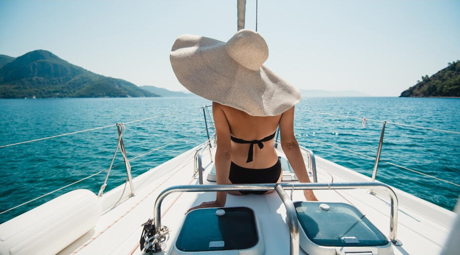
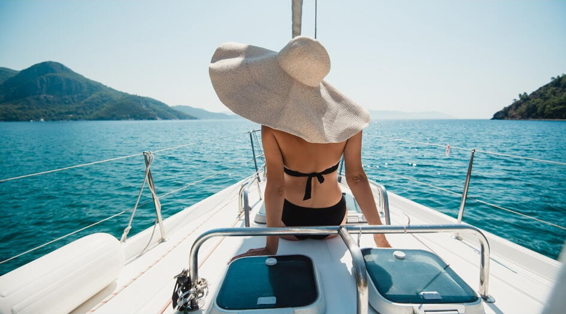
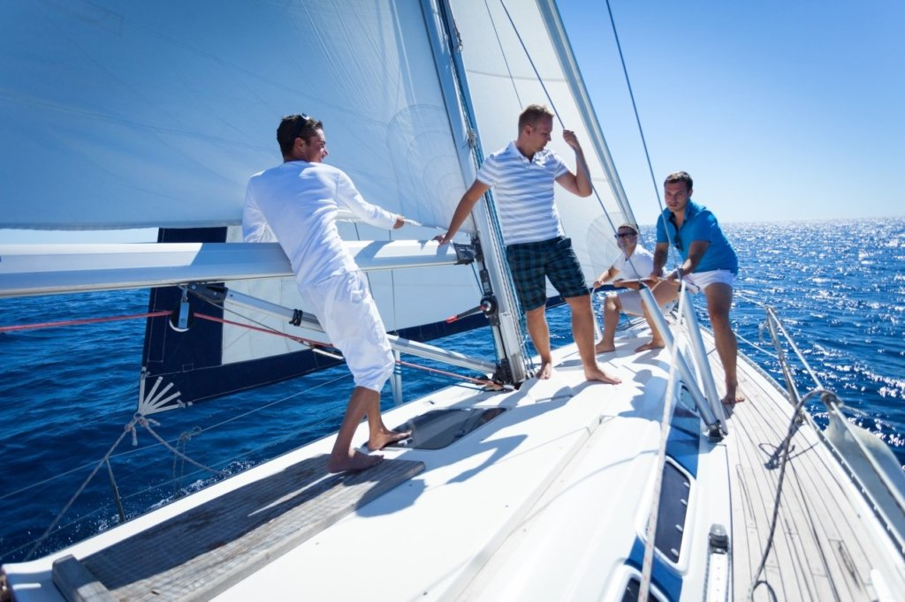

Катера и яхты
12420 суперяхт, актуальных моделей яхт и катеров от 1017 мировых производителей.
Здесь есть все!
Выбрать яхту
Говоря о классике, мы, конечно, в первую очередь представляем себе лодки из флота известных классических регат
(Les Voiles de Saint-Tropez или серии Panerai). Это яхты самых разных классов, размеров и возраста. Тендеры,
шхуны, шлюпы, кечи (гафельные и бермудские). В основном, это яхты с деревянными корпусом и рангоутом. Многие из
этих лодок тщательно восстановлены благодаря энтузиазму своих хозяев. Управляться с такими яхтами непросто, а
бытовые условия на их борту в соответствии с современными стандартами комфортными не назовешь.
Стать обладателем такой яхты — не только почетно, но и очень ответственно.
Как правило, все гоняющиеся в классических регатах яхты имеют свои постоянные команды, и, покупая известную
лодку, новый владелец по умолчанию берет на себя и обязанности по «социальной» жизни судна и его участии в
гонках. Многие любители классики поступают по-другому, находя старые корпуса и восстанавливая их из небытия. Те,
кто прошел процесс реставрации деревянной яхты, говорят, что это очень трудоемкая и творческая задача. Есть в
классическом флоте и реплики известных лодок прошлого. В общем, все это эксклюзивные и роскошные деревянные
суда, которые строят поштучно.

Виды парусных яхт
- Классические
- Спорт круизные
- Крейсерские со средиземноморским кокпитом
- С центральным или защищенным кокпитом
- Алюминевые парусные
.jfif) 


Отдых на яхте: 10 правил, которые стоит соблюдать
- Не спорьте с капитаном
- Выбирайте уместное время для разговоров
- Не берите на яхту лишние вещи
- Не знаете – спросите
- Экономьте ресурсы
- Не будьте эгоистом
- Трудитесь вместе со всеми
- Не навязывайте свои привычки и взгляды
- Будьте пунктуальны
- Соблюдайте яхтенный этикет
Хотите, чтобы отдых на яхте был в радость, а капитан звал в следующий раз в интересные путешествия, в первую очередь, именно вас? Запомните эти несколько простых правил. Можете считать это кратким кодексом начинающего яхтсмена.
